Yang ditimbang
Isi kepala pembeli: dorongan, harga diam, tarikan, lalu tiap rasa cemas dijawab satu per satu.
Kuat: langsung menjawab cemas pembeli, bisa diteruskan ke tim keuangan dan TI. Lemah: risiko terbaca seperti FAQ.

Yang sekarang bikin capek.
Jam dinding 22.10. Map rekap menumpuk, layar spreadsheet masih terbuka, nota merah jatuh ke piring kiri timbangan dan piring itu turun.
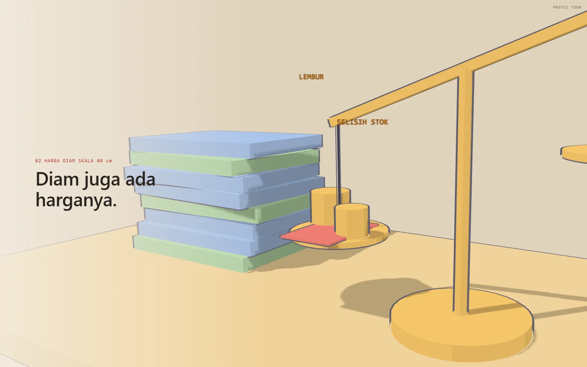
Diam juga ada harganya.
Dua beban bertuliskan LEMBUR dan SELISIH STOK turun ke piring kiri, timbangan makin berat sebelah.
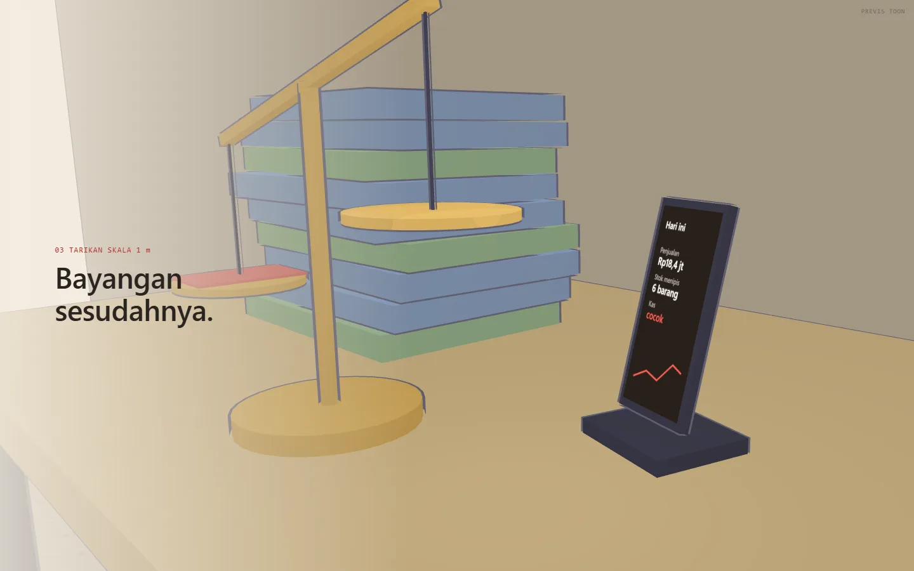
Bayangan sesudahnya.
HP di meja menyala. Satu layar ringkasan: penjualan, stok, dan kas hari ini. Cahayanya menerangi map yang tadi menumpuk.

Harganya jelas sejak awal.
Kartu 'tambahan fitur' masuk di tengah jalan. Kartu itu tidak menambah blok tahap 1, tetapi berdiri sendiri sebagai tahap 3 dengan harganya sendiri.
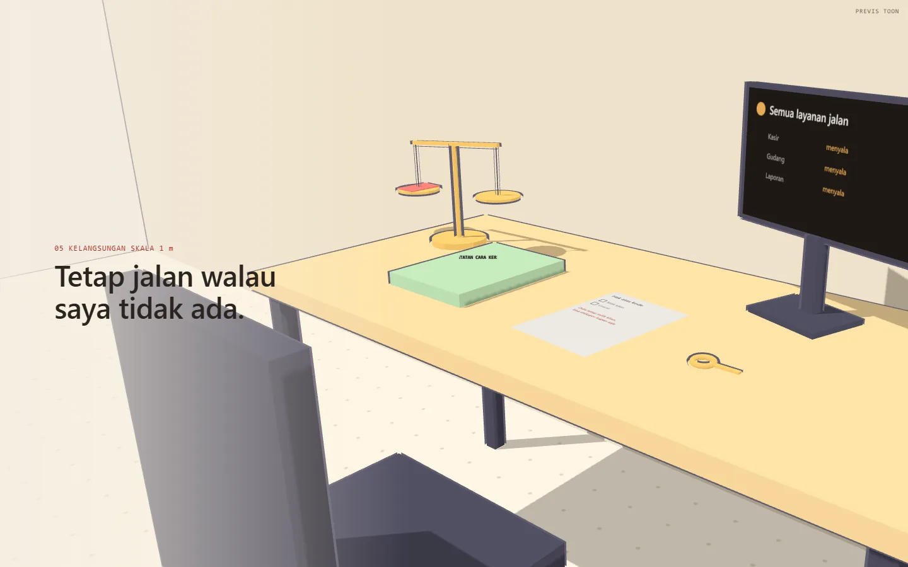
Tetap jalan walau saya tidak ada.
Kursi developer kosong. Lampu status sistem tetap menyala. Di meja: map catatan cara kerja, kunci ekspor data, dan kontrak dengan dua kotak centang: milik atau lisensi.

Diuji sebelum hari ramai.
Tanggal gajian. Kamera naik dari toko ke atas kota, ribuan titik transaksi naik dari blok-blok. Blok klien tetap menyala, antreannya mengalir.
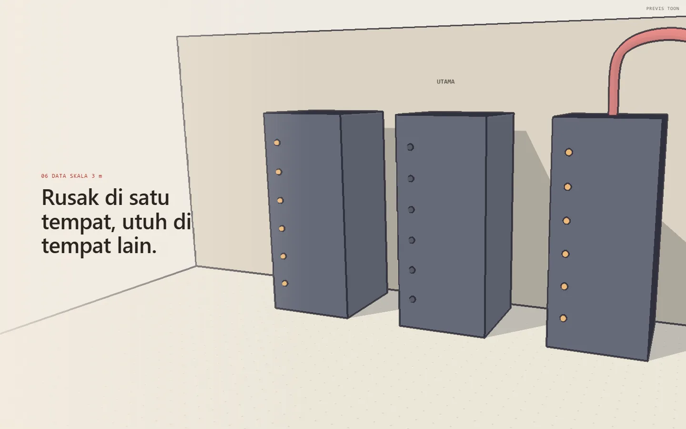
Aman dan bisa dipulihkan.
Permintaan asing ditolak di gerbang. Lalu satu server padam; salinan dari gedung lain mengalir balik lewat garis merah, sistem hidup lagi.
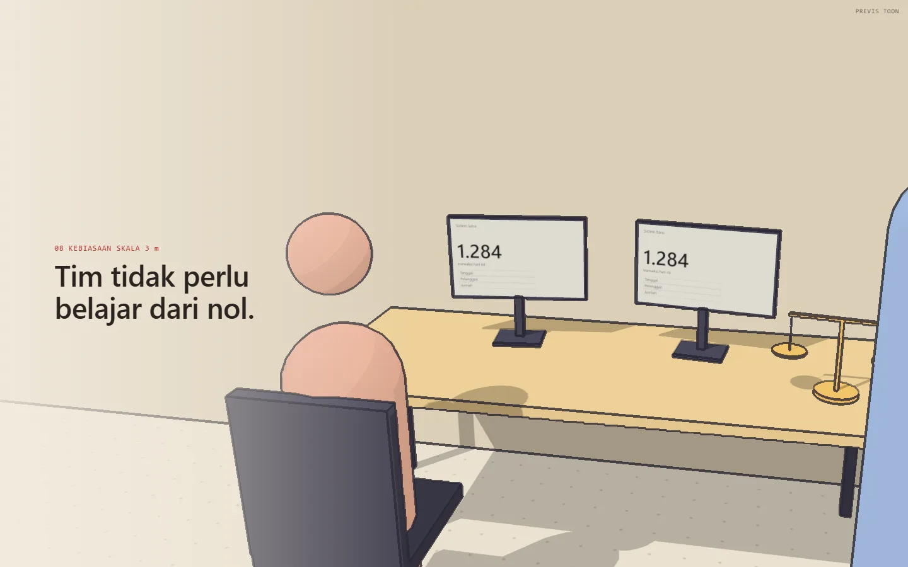
Tim tidak perlu belajar dari nol.
Hari pertama karyawan baru. Dua monitor berdampingan: sistem lama dan baru, angkanya sama. Formulir baru mengikuti urutan formulir lama.
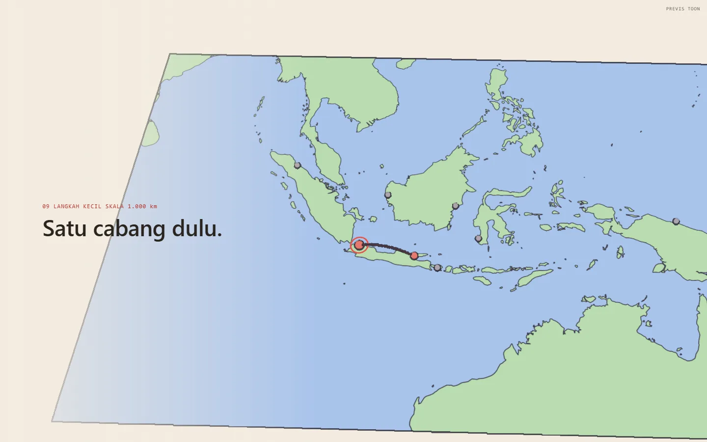
Satu cabang dulu.
Peta Nusantara gelap. Satu cabang menyala lebih dulu, beberapa babak kemudian cabang lain menyusul dan tersambung.
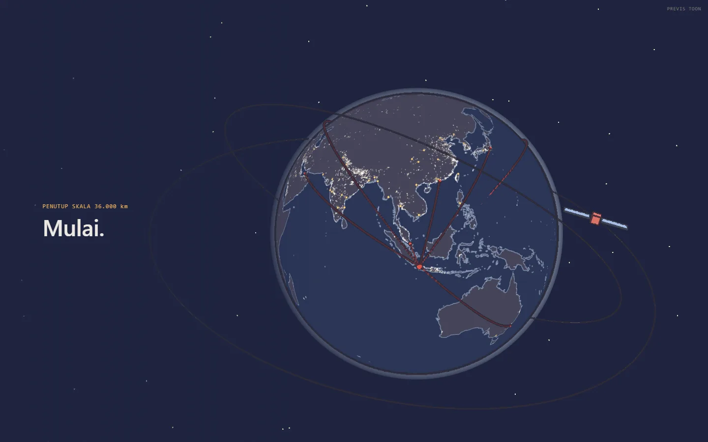
Mulai.
Kamera terus naik sampai orbit. Globe dengan garis dari Indonesia, satelit lewat. Lalu turun ke rak bukti proyek.
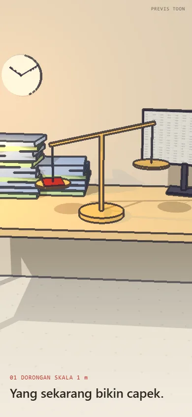
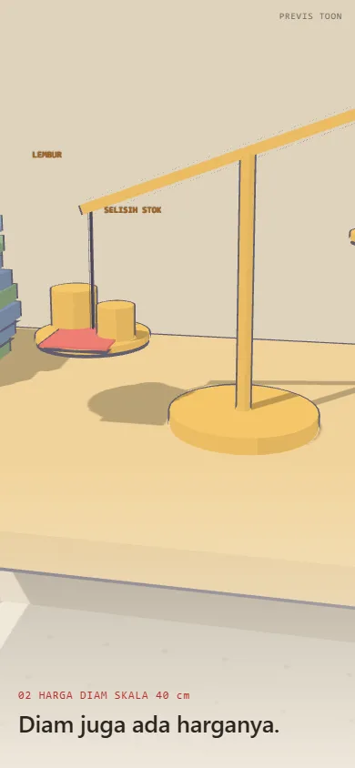
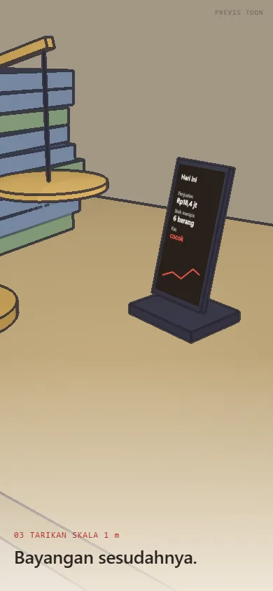
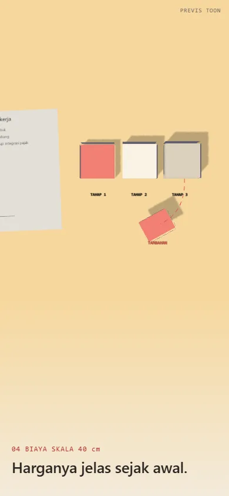
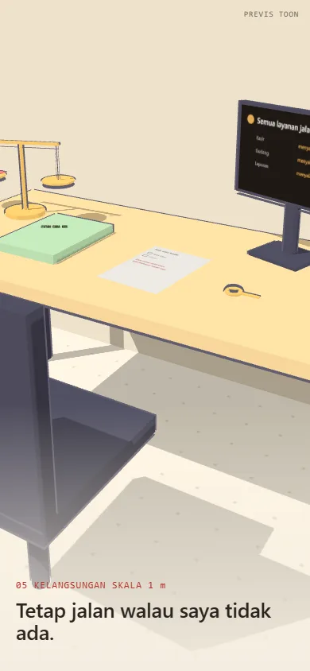
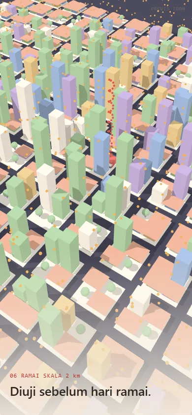
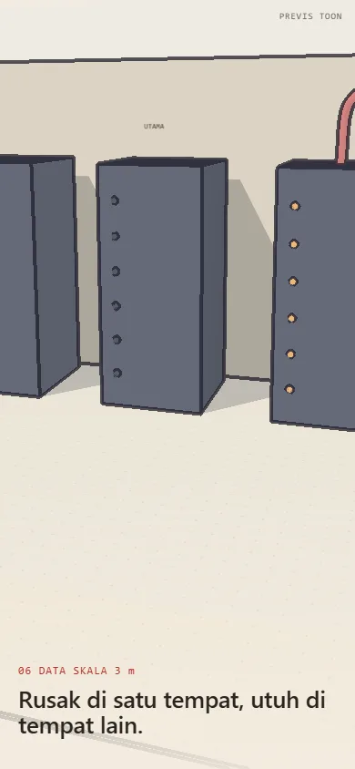
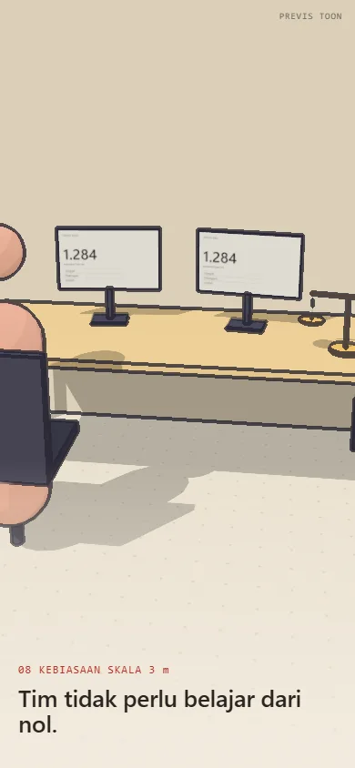
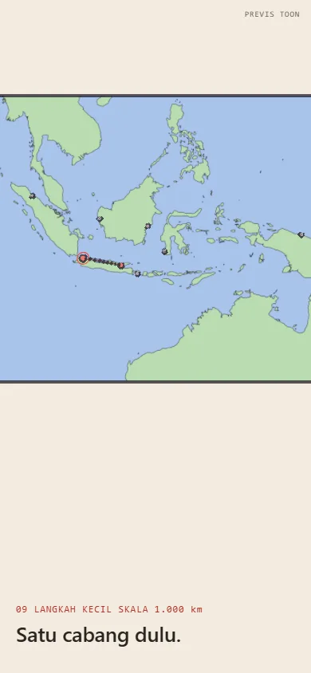
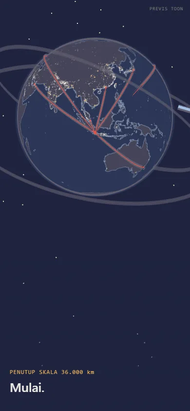